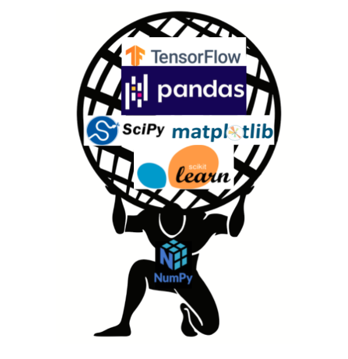

# Load libraries
import csv # convert a .csv to a nested list
import os # library for managing our operating system.
# Read in the gapminder data
with open("gapminder.csv", mode="rt") as file:
data = [row for row in csv.reader(file)]PPOL 5203 - Data Science I: Foundations
Week 4: From Nested Lists to Dataframes - Numpy and Intro do Pandas
Where we are ….
We started with the basics of being a data scientist
Then we moved over to the primitives of Python as your main DS tool:
OOP, Native Data Types in Python
Python Libraries, Loops, Functions, Generators, Comprehension….
Today we start our journey working with tabular data - a favorite of social scientists!
Plans for Today
File Management in Python (Most pythonic way to load data in Python)
Data as Nested Lists: Motivating Numpy
Numpy
Intro do Pandas
Series
Acesssing Pandas elements
Creating DataFrames
Discuss your final project.
File Management: How do we read files from our computer into our Python Environment?
Connection management functions:
open(), iterate over, andclose()
Reading/writing files
Using
with()to manage connections.
Summary of file management
open(): opens a connection with files on our system.
- open() returns a special item type *_io.TextIOWrapper*
- This item is a iterator. We need to go through to convert inputs to a object in python.
close(): closes the connection.
write(): writes files on your system. Also line by line, as in open()
with(): wrapper for open and close that allows alias.
Example:
TLDR:
Most often we will use high-level functions from Pandas to load data into Python objects.
Why are we learning these tools then?
Very pythonic ~ see in other people’s code
No direct equivalent in R or Stata
Important when working non-tabular data - text, json, images, etc..
Reading: Check Section 3.3 of Python for Data Analysis to learn more about the topics covered in the notebook.
From Nested Data to Dataframes: Motivating Numpy
Motivating Numpy
So far, all the data structures we saw are geared towards unidimensional data.
string: sequence of words
list: sequence of heterogeneous elements
dictionaries: key-value combinations.
Tabular data
Nested Lists
# Read in the gapminder data
import csv
with open("../lecture_notes/week-04/gapminder.csv",mode="rt") as file:
data = [row for row in csv.reader(file)]Quizz
Look at this tabular data organized as Nested List. What is “wrong” here?
# let's see the data
print(data)[['country', 'lifeExp', 'gdpPercap'], ['Guinea_Bissau', '39.21', '652.157'], ['Bolivia', '52.505', '2961.229'], ['Austria', '73.103', '20411.916'], ['Malawi', '43.352', '575.447'], ['Finland', '72.992', '17473.723'], ['North_Korea', '63.607', '2591.853'], ['Malaysia', '64.28', '5406.038'], ['Hungary', '69.393', '10888.176'], ['Congo', '52.502', '3312.788'], ['Morocco', '57.609', '2447.909'], ['Germany', '73.444', '20556.684'], ['Ecuador', '62.817', '5733.625'], ['Kuwait', '68.922', '65332.91'], ['New_Zealand', '73.989', '17262.623'], ['Mauritania', '52.302', '1356.671'], ['Uganda', '47.619', '810.384'], ['Equatorial Guinea', '42.96', '2469.167'], ['Croatia', '70.056', '9331.712'], ['Indonesia', '54.336', '1741.365'], ['Canada', '74.903', '22410.746'], ['Comoros', '52.382', '1314.38'], ['Montenegro', '70.299', '7208.065'], ['Slovenia', '71.601', '14074.582'], ['Trinidad and Tobago', '66.828', '7866.872'], ['Poland', '70.177', '8416.554'], ['Lesotho', '50.007', '780.553'], ['Italy', '74.014', '16245.209'], ['Tunisia', '60.721', '3477.21'], ['Kenya', '52.681', '1200.416'], ['Gambia', '44.401', '680.133'], ['Bosnia and Herzegovina', '67.708', '3484.779'], ['Libya', '59.304', '12013.579'], ['Greece', '73.733', '13969.037'], ['Ghana', '52.341', '1044.582'], ['Peru', '58.859', '5613.844'], ['Turkey', '59.696', '4469.453'], ['Reunion', '66.644', '4898.398'], ['Sri_Lanka', '66.526', '1854.731'], ['Cambodia', '47.903', '675.368'], ['Bulgaria', '69.744', '6384.055'], ['Lebanon', '65.866', '7269.216'], ['Togo', '51.499', '1153.82'], ['Yemen', '46.78', '1569.275'], ['Jamaica', '68.749', '6197.645'], ['Swaziland', '49.002', '3163.352'], ['Chile', '67.431', '6703.289'], ['Israel', '73.646', '14160.936'], ['Algeria', '59.03', '4426.026'], ['Czech_Republic', '71.511', '13920.011'], ['Djibouti', '46.381', '2697.833'], ['Singapore', '71.22', '17425.382'], ['Nigeria', '43.581', '1488.309'], ['Bangladesh', '49.834', '817.559'], ['DRC', '44.544', '648.343'], ['Cuba', '71.045', '6283.259'], ['Namibia', '53.491', '3675.582'], ['Sudan', '48.401', '1835.01'], ['Syria', '61.346', '3009.288'], ['Rwanda', '41.482', '675.669'], ['Puerto Rico', '72.739', '10863.164'], ['Albania', '68.433', '3255.367'], ['Vietnam', '57.48', '1017.713'], ['Mozambique', '40.38', '542.278'], ['Mali', '43.413', '673.093'], ['Saudi Arabia', '58.679', '20261.744'], ['Liberia', '42.476', '604.814'], ['Madagascar', '47.771', '1335.595'], ['Chad', '46.774', '1165.454'], ['Gabon', '51.221', '11529.865'], ['Mauritius', '64.953', '4768.942'], ['Zambia', '45.996', '1358.199'], ['Romania', '68.291', '7300.17'], ['Dominican Republic', '61.554', '2844.856'], ['Egypt', '56.243', '3074.031'], ['Senegal', '50.626', '1533.122'], ['Oman', '58.443', '12138.562'], ['Zimbabwe', '52.663', '635.858'], ['Botswana', '54.598', '5031.504'], ["Cote d'Ivoire", '48.436', '1912.825'], ['Afghanistan', '37.479', '802.675'], ['Mexico', '65.409', '7724.113'], ['Sao Tome and Principe', '57.896', '1382.782'], ['Myanmar', '53.322', '439.333'], ['Switzerland', '75.565', '27074.334'], ['United Kingdom', '73.923', '19380.473'], ['Japan', '74.827', '17750.87'], ['El Salvador', '59.633', '4431.847'], ['India', '53.166', '1057.296'], ['Thailand', '62.2', '3045.966'], ['Bahrain', '65.606', '18077.664'], ['Australia', '74.663', '19980.596'], ['Mongolia', '55.89', '1692.805'], ['Nepal', '48.986', '782.729'], ['Iran', '58.637', '7376.583'], ['Honduras', '57.921', '2834.413'], ['Guinea', '43.24', '776.067'], ['Venezuela', '66.581', '10088.516'], ['Iceland', '76.511', '20531.422'], ['Somalia', '40.989', '1140.793'], ['Burundi', '44.817', '471.663'], ['Panama', '67.802', '5754.827'], ['Costa Rica', '70.181', '5448.611'], ['Philippines', '60.967', '2174.771'], ['Denmark', '74.37', '21671.825'], ['Benin', '48.78', '1155.395'], ['Eritrea', '45.999', '541.003'], ['Belgium', '73.642', '19900.758'], ['West Bank and Gaza', '60.329', '3759.997'], ['South_Korea', '65.001', '8217.318'], ['Ethiopia', '44.476', '509.115'], ['Guatemala', '56.729', '4015.403'], ['Colombia', '63.898', '4195.343'], ['Cameroon', '48.129', '1774.634'], ['United States', '73.478', '26261.151'], ['Pakistan', '54.882', '1439.271'], ['China', '61.785', '1488.308'], ['Sierra Leone', '36.769', '1072.819'], ['Slovak Republic', '70.696', '10415.531'], ['Tanzania', '47.912', '849.281'], ['Paraguay', '66.809', '3239.607'], ['Argentina', '69.06', '8955.554'], ['Spain', '74.203', '14029.826'], ['Netherlands', '75.648', '21748.852'], ['France', '74.349', '18833.57'], ['Niger', '44.559', '781.077'], ['Central African Republic', '43.867', '958.785'], ['Serbia', '68.551', '9305.049'], ['Iraq', '56.582', '7811.809'], ['Uruguay', '70.782', '7100.133'], ['Angola', '37.883', '3607.101'], ['Sweden', '76.177', '19943.126'], ['Nicaragua', '58.349', '3424.656'], ['South Africa', '53.993', '7247.431'], ['Burkina Faso', '44.694', '843.991'], ['Haiti', '50.165', '1620.739'], ['Norway', '75.843', '26747.307'], ['Taiwan', '70.337', '10224.807'], ['Portugal', '70.42', '11354.092'], ['Jordan', '59.786', '3128.121'], ['Ireland', '73.017', '15758.606'], ['Brazil', '62.239', '5829.317']]Here comes numpy …
Python has no native data structure to work with tabular data (!!!!).
Numpy:
- Introduces arrays (numerical matrices) to the Python world.
- Optimizes for mathematical operations with matrices.

Why should you learn Numpy? Holds Python together!

Efficiency
Numpy leans toward less flexibility and more efficiency.
Lists gives you more flexibility and less efficiency.
Allows for easy vectorization of functions
Broadcasting for working with arrays with different dimensions
Materials
Coding:
Pandas
Motivation
Numpy offers a great flexibility and efficiency when dealing with data matrices.
Really efficient for mathematical operations.
Pretty bad for data wrangling tasks ~> numpy only accepts the same data type
The
pandaspackage was designed to solve this limitation by providing data structures to deal with rectangular & heterogeneous data types.Main Data Structures:
pd.series()andpd.DataFrames()
Pandas Series
A pandas series is a one-dimensional labeled array.
Capable of holding different data types (e.g. integer, boolean, strings, etc.).
It holds two key components:
- index: names in the axis
- values: values in the series
A pandas series is nothing but a column in an excel sheet or an R
data.frame(with an index)
Pandas Series Constructor
import pandas as pd
s = pd.Series(["Argentina", "France", "Germany","Spain", "Italy", "Brazil"],
index=[2022, 2018, 2014, 2010, 2006, 2002])
print(s)2022 Argentina
2018 France
2014 Germany
2010 Spain
2006 Italy
2002 Brazil
dtype: objectYou can feed to the constructor:
list
dictionaries
scalar values
ndarray
Pandas DataFrames
A pandas DataFrame is a two dimensional, relational data structure with the capacity to handle heterogeneous data types.
relational: each column value contained within a row entry corresponds with the same observation.
two dimensional: a matrix data structure
heterogeneous: different data types can be contained across each column series.
Constructor
import pandas as pd
# create a simple series
series = pd.Series(["Argentina", "France", "Germany","Spain", "Italy", "Brazil"],
index=[2022, 2018, 2014, 2010, 2006, 2002])
# create the dataframe
df = pd.DataFrame(series)
print(df) 0
2022 Argentina
2018 France
2014 Germany
2010 Spain
2006 Italy
2002 BrazilWe will discuss:
using lists of dictionaries to build dataframes row-wise
using dictionary of lists dataframes column-wise
Pandas DataFrames vs R Dataframes
Important concepts:
- Creating Dataframes
- row-wise: using a list of dictionaries
- column-wise: using a dictionaries of lists
- Indexing for accessing Data Frames in Python
- No implicit indexing (d[1,2]) will throw you an error.
- .iloc[] = use the numerical index position to call to locations in the DataFrame.
- .loc[] = use the labels to call to the location in the data frame.
Notebook for Pandas
Final Project
What is it? A data science project, applying concepts learned throughout the course.
Involves collecting data, cleaning and analyzing it, and presenting your findings
The project is composed of three parts:
a 2 page project proposal: (which should be discussed and approved by me)
an in-class presentation,
A 10-page project report.
Deadlines and Logistics
| Requirement | Due | Length | Percentage |
|---|---|---|---|
| Project Proposal | November 15 | 2 pages | 5% |
| Presentation | December 10 | 10-15 minutes | 10% |
| Project Report | December 17 | 10 pages | 25% |
Groups of three students. You pick your groups.
Before November 8, you should have meet with me to discuss your proposal.
At lest one hour before our meeting, send me a draft of your proposal.
Send me an email with your group and when you are going to my office hours.
Our meeting should be before October 26